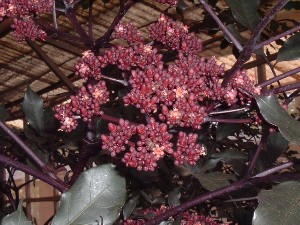
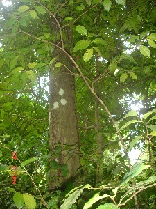
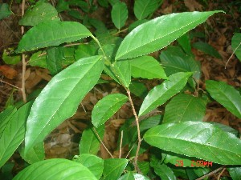
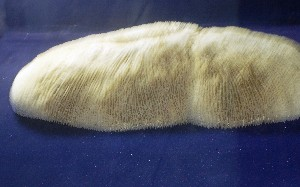
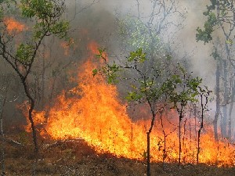

L - l
-l -ल DEIXIS डीक्सीस. locative marker; स्थानवाचक. tɑrɑ-l तारा-ल. on. पर. SD: reference, संदर्भ.
lɑbo लाबो Etym: North Andaman; उत्तरी अण्डमान. VAR: lɑboː लाबोऽ; lɑːbo लाऽबो. N सं. edible potato roots; rope-like tuber (brown); खाद्य आलू की जड़ें; रस्सी जैसा भूरा कन्द. SD: flora, फूल-पत्ती.
|
lɑcɑ1 लाचा VAR: lɑːcɑ लाऽचा. N सं. a variety of sea bird; Lesser Crested Tern; एक प्रकार का समुद्री पक्षी. Sterna bengalensis. SD: bird, पक्षी. NT: Nao once spotted one that had become wet in a heavy storm on the island. He took it home and when he put it down, he noticed a tag attached to its leg, with ‘35 Australia’ printed on it. The bird has an interesting way of relaxing on water when tired. It lays eggs amongst a heap of stones. It loves following ships and thus can be spotted very easily behind ships, just above the slipstream. नाओ ने अपने जीवन काल में एक बार तेज़ आंधी-तूफ़ान में बुरी तरह भीगे हुए लाचा पक्षी को पकड़ा था। जब वह उसे घर लाया तो उसने देखा कि पक्षी के पांव से एक चेपी लटक रही है जिसमें लिखा था ‘35 औस्ट्रेलिया’। लाचा अकसर जहाज़ का पीछा करता है और इसलिए इसे आसानी से जहाज़ के पीछे देखा जा सकता है। पीछा करते-करते जब यह थक जाता है तो पानी की सतह पर बड़े मज़ेदार तरीके से आराम करता है।. SEE: lɑcɑ2 ‘tree’ ‘पेड़ लाचाhm:{2}’.
lɑcɑ2 लाचा VAR: lɑːcɑ लाऽचा. N सं. a tree with white bark; सफ़ेद छाल वाला पेड़. SD: flora, फूल-पत्ती. SEE: lɑcɑ1 ‘bird’ ‘पक्षी लाचाhm:{1}’.
 lɑːe1 लाऽए VAR: lɑɛ-pʰir लाऐफीर. N सं. shark; शार्क. SD: fish, मछली. SEE: lɑːe2 ‘sugarcane’ ‘गन्ना लाऽएhm:{2}’.
lɑːe1 लाऽए VAR: lɑɛ-pʰir लाऐफीर. N सं. shark; शार्क. SD: fish, मछली. SEE: lɑːe2 ‘sugarcane’ ‘गन्ना लाऽएhm:{2}’.
 lɑːe2 लाऽए VAR: lɑɛ-pʰir लाऐफीर. N सं. sugarcane; गन्ना. SD: edible item, खाद्य सामग्री. SEE: lɑːe1 ‘bird’ ‘पक्षी लाऽएhm:{1}’.
lɑːe2 लाऽए VAR: lɑɛ-pʰir लाऐफीर. N सं. sugarcane; गन्ना. SD: edible item, खाद्य सामग्री. SEE: lɑːe1 ‘bird’ ‘पक्षी लाऽएhm:{1}’.
lɑecɛ लाएचै MORPH: lɑe-cɛ. N सं. a kind of cane splinter; एक प्रकार की बेंत की फांस. SD: natural environment, प्राकृतिक वातावरण.
lɑi लाई N सं. cane fruit; बेंत का फल. SD: flora, फूल-पत्ती.
lɑifir लाईफीर MORPH: lɑi-fir. N सं. a kind of red cane; एक प्रकार की लाल बेंत. SD: flora, फूल-पत्ती.
lɑlemeb लालेमेब MORPH: lɑleme-b. V क्रि. feel nauseous due to consumption of liquor; intoxicated; जी मिचलना, शराब पीने के कारण; मदहोश होना.
lɑlŋɑonobe लाल्ङाओनोबे MORPH: lɑl-ŋɑono-be. Etym: Khora. V क्रि. sit there; उधर बैठो. lɑl-ŋɑono-be-m लाल-ङाओनो-बेम. Do not sit there. वहाँ मत बैठो।. ʈʰi-we ŋɑono-be ठीवे ङाओनो-बे. (you) Sit here. (तुम) यहाँ बैठो.
lɑm लाम N सं. numbness of the feet; पैर का सुन्नापन. ɲɔ-lɑm-b-om ञौ लाम बोम. Your foot has become numb. तुम्हारा पांव सो गया है।. SD: attribute, विशेषता.
 lɑo लाओ VAR: lɑu लाऊ. N सं. outsider; stranger; foreigner; ghost; spirit; बाहरी लोग; अजनबी; विदेशी; भूत; आत्मा. SD: people, लोग.
lɑo लाओ VAR: lɑu लाऊ. N सं. outsider; stranger; foreigner; ghost; spirit; बाहरी लोग; अजनबी; विदेशी; भूत; आत्मा. SD: people, लोग.
lɑobirɑ लाओबीरा MORPH: lɑo-birɑ. N सं. unknown or foreign place; अनजान या विदेशी जगह. SD: habitat, रहन-सहन.
lɑobukʰu लाओबूखू MORPH: lɑo-bukʰu. N सं. alien female; विदेशी महिला. SD: people, लोग.
lɑocɔpʰe लाओचौफे MORPH: lɑo-cɔpʰe. N सं. crowd; भीड़. SD: people, लोग.
lɑotɑrɑɲo लाओताराञो MORPH: lɑo-tɑrɑ-ɲo. N सं. outsiders’ house or play; city; अजनबियों का घर या खेल; नगर. SD: habitat, रहन-सहन.
 |
 lɑotcʰoʈe लाओत्छोटे VAR: lɑorcʰoʈe लाओरछोटे; lɑːwɔcoʈe लाऽवौचोटे. N सं. a sea bird that looks like a partridge; Eurasian Curlew; बड़ा तीतर जैसा समुद्री पक्षी. Numenius arquata. SD: bird, पक्षी. NT: It lives near beaches, lays white eggs and hunts fish. It breaks broken shells and makes pounding or hammering sounds loud enough to scare anyone at night. In the morning, one can see the heaps of empty seashells. समुद्र के किनारे रहने वाला सफ़ेद अण्डे देने वाला यह समुद्री पक्षी मछलियों का शिकार करता है। रात को अपनी चोंच से बड़े-बड़े शंख और सीपियां तोड़ता है जिसकी आवाज़ किसी को भी डरा देती है। सुबह टूटे हुए शंख और सीपियों के ढेर समुद्र-तट पर देखे जा सकते हैं।.
lɑotcʰoʈe लाओत्छोटे VAR: lɑorcʰoʈe लाओरछोटे; lɑːwɔcoʈe लाऽवौचोटे. N सं. a sea bird that looks like a partridge; Eurasian Curlew; बड़ा तीतर जैसा समुद्री पक्षी. Numenius arquata. SD: bird, पक्षी. NT: It lives near beaches, lays white eggs and hunts fish. It breaks broken shells and makes pounding or hammering sounds loud enough to scare anyone at night. In the morning, one can see the heaps of empty seashells. समुद्र के किनारे रहने वाला सफ़ेद अण्डे देने वाला यह समुद्री पक्षी मछलियों का शिकार करता है। रात को अपनी चोंच से बड़े-बड़े शंख और सीपियां तोड़ता है जिसकी आवाज़ किसी को भी डरा देती है। सुबह टूटे हुए शंख और सीपियों के ढेर समुद्र-तट पर देखे जा सकते हैं।.
lɑoterco लाओतेरचो MORPH: lɑo-ter-co. N सं. skull of the non-Andamanese; गैर अण्डमानी की खोपड़ी. SD: body part term, शारीरिक अंग शब्दावली.
 |
 lɑotɛitutbec लाओतैईतूतबेच MORPH: lɑo-tɛi-tut-bec. N सं. a kind of blue rock thrush, lit. alien blood-bird; एक प्रकार का पक्षी; शाब्दिक अर्थः विदेशी-ख़ून-चिड़िया. Monticola solitarius. SD: bird, पक्षी. NT: A migratory bird. It roams on the ground and comes out only in the morning. प्रवासी पक्षी। ज़मीन पर घूमने वाला यह पक्षी सुबह के समय ही नज़र आता है।.
lɑotɛitutbec लाओतैईतूतबेच MORPH: lɑo-tɛi-tut-bec. N सं. a kind of blue rock thrush, lit. alien blood-bird; एक प्रकार का पक्षी; शाब्दिक अर्थः विदेशी-ख़ून-चिड़िया. Monticola solitarius. SD: bird, पक्षी. NT: A migratory bird. It roams on the ground and comes out only in the morning. प्रवासी पक्षी। ज़मीन पर घूमने वाला यह पक्षी सुबह के समय ही नज़र आता है।.
lɑrɑ लारा V क्रि. hunt turtle; कछुए का शिकार करना.  nu cokbi-bi lɑrɑkom नू चोक्बी बी लाराकोम. They hunt turtles. वे कछुए का शिकार करते हैं।.
nu cokbi-bi lɑrɑkom नू चोक्बी बी लाराकोम. They hunt turtles. वे कछुए का शिकार करते हैं।.
 |
lɑroʈɔl लारोटौल N सं. a kind of flower; एक प्रकार का फूल. Nekonata. SD: flora, फूल-पत्ती.
lɑroʈɔlo लारोटौलो MORPH: lɑro-ʈɔlo. N सं. flowering tree; फूलों का पेड़. SD: flora, फूल-पत्ती. NT: This flower blossoms in hot weather. इस पेड़ के फूल गर्मी में खिलते हैं।.
lɑʈ लाट VAR: lɔʈ लौट. Etym: Pujjukar; पुज्जूकर. N सं. fear; डर. ʈʰem-lɑʈ; ʈʰɛm lɔʈ kʰeno ठेम लाट; ठैम लौट खेनो. I am afraid. मुझको डर लगता है।. ŋɑrɑm lɑʈ-bim ङाराम लाट बीम. don’t be afraid. डरो मत ।. SD: psychological predicate, मनोवैज्ञानिक विधेय.
 |
lɑʈʰɑo लाठाओ N सं. a kind of tree used for making poles; एक प्रकार का पेड़ जिसका प्रयोग खंबा बनाने के लिए होता है. SD: flora, फूल-पत्ती.
 |
lɑʈʰɑotɛc लाठाओतैच MORPH: lɑʈʰɑo-tɛc. N सं. leaf of the lathao tree; लाठाओ पेड़ का पत्ता. SD: flora, फूल-पत्ती.
lɑʈbo लाटबो MORPH: lɑʈ-bo. V क्रि. be afraid; डरना. ʈʰɑ-rɑ-m lɑʈ-bo ठा-रा-म लाटबो. I am afraid. मैं डरा हुआ हूं।. ʈʰɑrɑ-m lɑʈ-pʰo-be ठाराम लाट्फो-बे. I am not afraid. मैं डरा हुआ नहीं हूं।.
lɑːwfɑn लाऽवफान N सं. betel leaf; पान का पत्ता. SD: flora, फूल-पत्ती.
leː लेऽ VAR: le ले. N सं. a harmful wild crab that has hairy legs; खतरनाक जंगली खाद्य केकड़ा जिसके पैर बाल से भरे होते हैं. SD: marine, समुद्री.
leber लेबेर Etym: Pujjukar; पुज्जूकर. N सं. leveled place; समतल जगह. SD: attribute, विशेषता.
lebetɔkʰ लेबेतौख MORPH: lebe-tɔkʰ. V क्रि. fan; पंखा करना. buroko lebe tɔkʰe ke बूरोको लेबे तौखे के. The wild hen fans (the earth with her wings). जंगली मुर्गी पंखा करती है (अपने पंखों से धरती पर)।.
 lecʈoe लेच्टोए MORPH: lec-ʈoe. N सं. bamboo used to make arrow; तीर बनाने के प्रयोग में आने वाला बांस. SD: flora, फूल-पत्ती, tool, औज़ार.
lecʈoe लेच्टोए MORPH: lec-ʈoe. N सं. bamboo used to make arrow; तीर बनाने के प्रयोग में आने वाला बांस. SD: flora, फूल-पत्ती, tool, औज़ार.
leišɑr लेईशार VAR: lešɑr लेशार; lɛsɑr लैसार. N सं. time for hunting, especially dugong, turtle, etc; शिकार का समय (ख़ासकर डूगोंग, कछुए आदि का). SD: hunting & gathering, शिकार एवं संचय सम्बंधी. SEE: leišɑr1 ‘full dark moon; darkness’ ‘अमावस; अंधेरा लेईशारhm:{1}’.
 leišɑr1 लेईशार VAR: lešɑr लेशार; lɛsɑr लैसार. N सं. full dark moon; darkness/ dark night; अमावस; अंधेरा/ अंधेरी रात. SD: natural environment, प्राकृतिक वातावरण. NT: In the Andamans, this time is also known as turtle-hunting time. अण्डमान में अमावस को ‘कछुआ शिकार’ का समय माना जाता है।. SEE: leišɑr2 ‘hunting time’ ‘शिकार का समय लेईशारhm:{2}’.
leišɑr1 लेईशार VAR: lešɑr लेशार; lɛsɑr लैसार. N सं. full dark moon; darkness/ dark night; अमावस; अंधेरा/ अंधेरी रात. SD: natural environment, प्राकृतिक वातावरण. NT: In the Andamans, this time is also known as turtle-hunting time. अण्डमान में अमावस को ‘कछुआ शिकार’ का समय माना जाता है।. SEE: leišɑr2 ‘hunting time’ ‘शिकार का समय लेईशारhm:{2}’.
lele लेले VAR: leːle लेऽले. N सं. swing; cradle; पालना; झूला. SD: household, घरेलू.
leo लेओ N सं. short; thin; छोटा; पतला. ɲɔrto leo ञौरतो लेओ. the way which is short. छोटा रास्ता.  kɑʈɑrɑkɑrɑpleo काटाराकारापलेओ. her thin waist. उसकी पतली कमर. SD: attribute, विशेषता.
kɑʈɑrɑkɑrɑpleo काटाराकारापलेओ. her thin waist. उसकी पतली कमर. SD: attribute, विशेषता.
 |
 lep लेप VAR: leːp लेऽप; lɔɸ लौफ; wɛɸ वैफ. N सं. smoke; धुआं. SD: natural environment, प्राकृतिक वातावरण.
lep लेप VAR: leːp लेऽप; lɔɸ लौफ; wɛɸ वैफ. N सं. smoke; धुआं. SD: natural environment, प्राकृतिक वातावरण.
lepʰɑe लेफाए Etym: Bo; बो. ADJ वि. thirsty; प्यासा. SD: state, अवस्था.
 |
lepʰecoŋe लेफेचोङे N सं. a kind of fish; एक प्रकार की मछली. SD: fish, मछली.
lereːmo लेरेऽमो N सं. white sand fly; सफ़ेद बालू मक्खी. SD: insect & invertebrate, कीट-पतंग एवं अरीढ़ जीव.
lɛb1 लैब VAR: lɛbe लैबे; leːbe लेऽबे. V क्रि. descend; उतरना. buruin tɔŋɔ lɛbeː बूरूईन तौङौ लैबेऽ. descend from the hill. पहाड़ से उतरना।. SEE: lɛb2 ‘sweep’ ‘झाड़ू मारना लैबhm:{2}’.
lɛb2 लैब VAR: lɛbe लैबे; leːbe लेऽबे. V क्रि. sweep; झाड़ू मारना या झाड़ना. ʈʰibilebe ठीबीलेबे. Sweep the floor. झाड़ू लगा।. SEE: lɛb1 ‘descend’ ‘उतरना लैबhm:{1}’.
 lɛc लैच VAR: vɛːc वैऽच; lʷec ल्वेच; βɛc बैच. N सं. a small arrow to catch fish or crab; मछली या केकड़ा मारने का छोटा तीर. SD: tool, औज़ार, hunting & gathering, शिकार एवं संचय सम्बंधी.
lɛc लैच VAR: vɛːc वैऽच; lʷec ल्वेच; βɛc बैच. N सं. a small arrow to catch fish or crab; मछली या केकड़ा मारने का छोटा तीर. SD: tool, औज़ार, hunting & gathering, शिकार एवं संचय सम्बंधी.
lɛco1 लैचो N सं. one who chews; चबानेवाला. SD: people, लोग. NT: This is also Lico’s real name. लीचो (अण्डमानी महिला) का असली नाम।. SEE: lɛco2 ‘suck; chew’ ‘चूसना; चबाना लैचोhm:{2}’.
lɛco2 लैचो V क्रि. suck; chew; चूसना; चबाना. SEE: lɛco1 ‘one who chews’ ‘चबानेवाला लैचोhm:{1}’.
lɛctɑrɑʈʰomo लैचताराठोमो MORPH: lɛc-tɑrɑ-ʈʰomo. N सं. quiver; तरकस. SD: hunting & gathering, शिकार एवं संचय सम्बंधी.
lɛcʈɔe लैचटौए MORPH: lɛc-ʈɔe. VAR: lɛc-ʈɔy लैच्टौय. N सं. arrow, wooden; wood used to make arrows; लकड़ी का तीर; लकड़ी तीर बनाने में प्रयुक्त. SD: tool, औज़ार, hunting & gathering, शिकार एवं संचय सम्बंधी.
lɛl लैल V क्रि. descend from the boat; नाव से उतरना. u-lɛl ɛmpʰil ऊलैल ऐम्फील. He died as soon as he descended from the boat (on the sand). जैसे ही वह नाव से उतरा, वह मर गया।.
 lɛne लैने V क्रि. get down; unload; उतरना; उतारना. ʈʰu siɽʰi lɛne kom ठू सीढ़ी लैने कोम. I am coming down the ladder. मैं सीढ़ी से उतर रही हूं।.
lɛne लैने V क्रि. get down; unload; उतरना; उतारना. ʈʰu siɽʰi lɛne kom ठू सीढ़ी लैने कोम. I am coming down the ladder. मैं सीढ़ी से उतर रही हूं।.
lɛp लैप V क्रि. clean; साफ़ करना. ʈʰi-tut-lɛp-ke ठीतूत्लैपके. Clean the floor. ज़मीन साफ़ करो।.
lɛrɛmo लैरैमो VAR: lɛremo लैरेमो; lɛrɛme लैरैमे. N सं. a small white sea mosquito that bites really hard; छोटा सफ़ेद समुद्री मच्छर जो बहुत बुरा काटता है. SD: insect & invertebrate, कीट-पतंग एवं अरीढ़ जीव.
libo लीबो V क्रि. swallow; निगलना.
lico लीचो VAR: lecɔ लेचौ; licɔ लीचौ. N सं. basket; टोकरी. SD: household, घरेलू.
 |
licɔ लीचौ N सं. hand-held fishing net; हाथ से मछली पकड़ने का जाल. SD: hunting & gathering, शिकार एवं संचय सम्बंधी.
lidɑo लीदाओ N सं. a kind of shell; एक प्रकार की सीपी. SD: marine, समुद्री.
liɖo लीडो V क्रि. drown (inanimate); डूबना (निर्जीव). ɲyo bi liɖi-me ञ्यो बी लीडीमे. The houses drowned. घर डूब गए।.
lik लीक MORPH: li-k. V क्रि. narrate; बताना.
liknu लीक्नू MORPH: lik-nu. N सं. thread; धागा. SD: household, घरेलू.
likʰo लीखो V क्रि. feel uncomfortable; परेशानी महसूस करना.
lile लीले V क्रि. swim; तैरना.
lilekɛ लीलेकै MORPH: lile-kɛ. V क्रि. be peaceful; धैर्य रखना.
lim लीम N सं. a kind of sea stone; एक प्रकार का समुद्री पत्थर. SD: natural environment, प्राकृतिक वातावरण.
limiyo लीमीयो V क्रि. murmuring; फुसफुसाना.
 |
limmeyo लीम्मेयो MORPH: lim-meyo. N सं. a kind of coral; एक प्रकार का मूंगा. SD: marine, समुद्री.
 |
lioʈ लीओट VAR: liyoːʈ लीयोऽट. N सं. a kind of red fish; एक प्रकार की लाल बेदकी मछली. SD: fish, मछली.
liširom लीशीरोम V क्रि. catch, turtle; कछुआ पकड़ना.
liʈkʰɛmɔ लीटखैमौ VAR: liʈkʰemo लीटखेमो; liʈxeːmo लीटखेऽमो; wiʈkʰemo वीटखेमो. N सं. frog which lives in the water; पानी में रहने वाला मेंढक. SD: animal, जानवर.
 |
liʈʰu लीठू VAR: liːʈtu लीऽट्तू. N सं. Muscle fish; स्याही मछली. SD: fish, मछली.
liu लीऊ N सं. name; नाम.  ŋer liu ɑšyu bi ङेर लीऊ आश्यू बी. What is your name? तुम्हारा नाम क्या है? ŋe-liu ङेलीऊ. your name. तुम्हारा नाम. ʈʰɛr-liu ठैरलीऊ. my name. मेरा नाम. SD: people, लोग.
ŋer liu ɑšyu bi ङेर लीऊ आश्यू बी. What is your name? तुम्हारा नाम क्या है? ŋe-liu ङेलीऊ. your name. तुम्हारा नाम. ʈʰɛr-liu ठैरलीऊ. my name. मेरा नाम. SD: people, लोग.
liuši लीऊशी VAR: liyuːwsi लीयूऽवसी. N सं. a type of fish; एक प्रकार की मछली. SD: fish, मछली. NT: This fish jumps and lays eggs simultaneously. ऐसी मछली जो उछल-उछल कर अण्डे देती है।.
-liwo -लीवो V-SUF क्रि प्र. say; periphrastic causative; कहना; प्रेरणार्थक क्रियापद. lico ʈʰik-kʰole-liwo लीचो ठीक्खोले लीवो. Lico asked me to laugh; Lico made me laugh. लीचो ने मुझे हंसने के लिए कहा; लीचो ने मुझे हंसाया।.
liwom लीवोम V क्रि. want; मांगना.
lobɔŋ लोबौङ ADJ वि. long; लम्बा. SD: attribute, विशेषता.
loeʈʰo लोएठो N सं. a kind of sweet fruit; एक प्रकार का मीठा फल. SD: edible fruit, खाद्य फल. NT: It is green white stripes. सफ़ेद धारियों वाला हरे रंग का फल।.
loitok लोईतोक Etym: North Andaman; उत्तरी अण्डमान. N सं. a kind of vegetarian food; एक प्रकार का शाकाहारी खाना. SD: edible item, खाद्य सामग्री.
lokɑ लोका N सं. big, strong person who can carry huge loads; विशाल, तगड़ा व्यक्ति जो काफी वज़न उठा सकता है. SD: people, लोग.
loroʈɔlɔ लोरोटौलौ MORPH: loro-ʈɔlɔ. N सं. a kind of flower; एक प्रकार का फूल. SD: flora, फूल-पत्ती. NT: The blooming of this flower is associated with the hunting period in the sea which is best for catching Phiku and Nuri fishes. इसके खिलने के समय समुद्र में फीकू और नूरी मछलियों का शिकार ख़ूब मिलता है।.
lotʰ लोथ VAR: loʈʰ लोठ. N सं. bamboo; बांस. SD: flora, फूल-पत्ती.
loto लोतो V क्रि. catch (fish); पकड़ना (मछली). o-tɑjiyocɔrer lotopʰolɔ ecul ocɔtɑ ipʰu kʰudi ओताजीयोचौरेर लोतोफोलौ एचूल ओचौता ईफू खूदी. Because they did not have net, they could not catch the fish. उनके पास जाल न होने की वजह से वे मछली नहीं पकड़ पाए।.
loʈɑ लोटा V क्रि. enter; घुसना. tec ɑrɑ-cɑ kɑk loʈɑko तेच आराचा काक लोटाको. Tec entered the nest. तेच घोंसले में घुसा।.
loyeʈʈɔ लोयेट्टौ N सं. pumpkin; कद्दू. SD: edible item, खाद्य सामग्री.
lɔcɔŋ लौचौङ VAR: locɔŋ लोचौङ. ADJ वि. narrow; संकरा.  ɲɔrto locɔŋ ञौरतो लोचौङ. narrow road. संकरा रास्ता. SD: attribute, विशेषता.
ɲɔrto locɔŋ ञौरतो लोचौङ. narrow road. संकरा रास्ता. SD: attribute, विशेषता.
lɔeʈʰo लौएठो N सं. an edible bitter fruit-yielding creeper; कड़वे फल वाली बेल. SD: edible item, खाद्य सामग्री. NT: This is edible. करेले जैसी कड़वे फल वाली बेल । इसे पकाकर खाते हैं।.
lɔkʰobe लौखोबे ADJ वि. naked; नंगा. SD: attribute, विशेषता.
lɔŋɔʈʰi लौङौठी N सं. loincloth; लुंगी. SD: costume & adornment, आभूषण एवं श्रृंगार.
lɔrʈɔŋ लौरटौङ MORPH: lɔr-ʈɔŋ. N सं. a poisonous tree; एक ज़हरीला पेड़. SD: flora, फूल-पत्ती.
lɔto लौतो VAR: lɔtɔ लौतौ. V क्रि. visit; come again and again; बार-बार आना.  e rem lɔto ए रेम लौतो. He comes again and again. वह बार-बार आता है।. bɑzɑr ɑkɑ-l kɑ-rɑm lɔtɔ बाज़ार आकाल काराम लौतौ. He goes to market again and again. वह बार-बार बाज़ार जाता है।.
e rem lɔto ए रेम लौतो. He comes again and again. वह बार-बार आता है।. bɑzɑr ɑkɑ-l kɑ-rɑm lɔtɔ बाज़ार आकाल काराम लौतौ. He goes to market again and again. वह बार-बार बाज़ार जाता है।.
lɔtɔ लौतौ ADJ वि. much; lot; ज़्यादा; ढेर. cɑi-ono-lɔtɔ-ko चाईओनो लौतौको. Why did you put so much oil? तुमने इतना ज़्यादा तेल क्यों डाला? SD: quantifier, परिमाण वाचक.
 lubom लूबोम V क्रि. fishing; मछली पकड़ना.
lubom लूबोम V क्रि. fishing; मछली पकड़ना.
 luːc लूऽच VAR: lvuc ल्वूच; luc लूच. N सं. cold; सर्दी; ज़ुकाम. ʈʰɛr-luːc ठैरलूच. I have a cold. मुझे ज़ुकाम है।. SD: illness, रोग.
luːc लूऽच VAR: lvuc ल्वूच; luc लूच. N सं. cold; सर्दी; ज़ुकाम. ʈʰɛr-luːc ठैरलूच. I have a cold. मुझे ज़ुकाम है।. SD: illness, रोग.
 |
luk लूक Etym: Pujjukar; पुज्जूकर. N सं. bank; jetty; किनारा; घाट. SD: natural environment, प्राकृतिक वातावरण.
lukbe लूक्बे MORPH: luk-be. V क्रि. take someone in the arms; किसी को बांहों में लो. mimi ʈʰɛ-luk-b-e मीमी ठै लूक बे. Mother take me in (your) arms. मां मुझे अपनी बांहों में ले लो।. SEE: iluk ‘lift; pull up; get something picked up’ ‘उठाना; ऊपर उठाना; उठवाना ईलूक ’.
lukʰui लूखूई N सं. the deep sea; गहरा सागर. SD: natural environment, प्राकृतिक वातावरण.
lulɑo लूलाओ MORPH: lu-lɑo. N सं. devil; दैत्य. SD: supernatural, अलौकिक.
lulil लूलील ADJ वि. sad; heartbreak; melancholy; उदास; दिल टूटना; उदासी. SD: attribute, विशेषता.
 luremo लूरेमो VAR: lureːmo लूरेऽमो; lʷuremu ल्वूरेमू; luɽemu लूड़ेमू. Etym: Khora; खोरा. N सं. rope; रस्सी. SD: hunting & gathering, शिकार एवं संचय सम्बंधी. NT: This rope is used for killing dugong and turtle. ख़ास प्रकार की रस्सी जो डूगोंग और कछुए का शिकार करने में प्रयुक्त होती है।.
luremo लूरेमो VAR: lureːmo लूरेऽमो; lʷuremu ल्वूरेमू; luɽemu लूड़ेमू. Etym: Khora; खोरा. N सं. rope; रस्सी. SD: hunting & gathering, शिकार एवं संचय सम्बंधी. NT: This rope is used for killing dugong and turtle. ख़ास प्रकार की रस्सी जो डूगोंग और कछुए का शिकार करने में प्रयुक्त होती है।.
 |
 luro लूरो VAR: luːro लूऽरो. N सं. fire; flame; आग; ज्वाला. SD: fire, अग्नि, cooking & food, खाना-पीना.
luro लूरो VAR: luːro लूऽरो. N सं. fire; flame; आग; ज्वाला. SD: fire, अग्नि, cooking & food, खाना-पीना.
luruɑ लूरूआ VAR: mɔnʈɛŋɑ मौनटैङा. N सं. Bluff Island; ब्लफ़ द्वीप. SD: proper noun, व्यक्तिवाचक संज्ञा.
lurufe लूरूफे VAR: luruphi लूरूफी. N सं. air bubble; हवा का बुलबुला. SD: natural environment, प्राकृतिक वातावरण.
luxuy लूखूय N सं. depth; गहराई. SD: attribute, विशेषता.